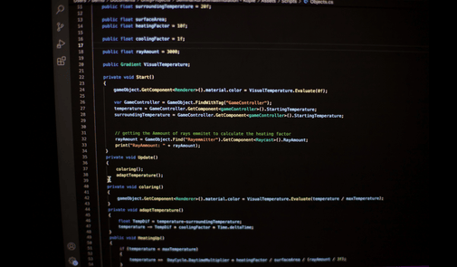

In today’s data-driven landscape, machines don’t just compute—they learn. This section dives into the foundations of machine learning: from supervised and unsupervised algorithms to neural networks that mimic the human brain. Through hands-on experimentation and visual storytelling, I explore how models uncover patterns, make predictions, and evolve with data. Join me as I transform abstract theory into practical insight, one algorithm at a time.
Below you will find some of the units that will be reviewd in this module. Come take a look!

The 4th Industrial Revolution
IThe Fourth Industrial Revolution marks a transformative era where emerging technologies like artificial intelligence, robotics, and biotechnology are reshaping industries, societies, and the way humans interact with machines.
Come take a look!

EDA TUTORIAL
Exploratory Data Analysis (EDA) is a crucial first step in any data science workflow, allowing us to uncover patterns, spot anomalies, and form hypotheses through visual and statistical techniques..
Come take a look!

Correlation and Regression
This assignment explores correlation and regression techniques to analyze relationships between variables, quantify their strength, and build predictive models based on observed data patterns..
Lets check the excercise!
Linear Regression with Scikit-Learn
This tutorial demonstrates how to implement and interpret Linear Regression using Scikit-Learn, a powerful Python library for building and evaluating machine learning models.
Come take a look
Jaccard Coefficient Calculations
This section explores Jaccard Coefficient calculations, a method used to measure the similarity between two sets by comparing their shared and distinct elements..
Learn more
K-Means Clustering Tutorial
This tutorial introduces K-Means Clustering, an unsupervised learning algorithm used to group data into distinct clusters based on similarity.
Check the tutorial
Perceptron Activities
This tutorial explores Perceptron Activities, guiding learners through the foundational concepts and practical implementation of one of the earliest algorithms in machine learning for binary classification.
Come take a look!
Emerging Reasearch on ANN
This paper examines emerging research in Artificial Neural Networks (ANN), highlighting recent advancements, innovative architectures, and evolving applications that are reshaping the landscape of intelligent systems.
Read it here
Gradient Cost Function
This tutorial introduces the Gradient Cost Function, a key concept in optimization that helps evaluate and minimize prediction errors during model training using gradient-based methods..
Check it out!
Legal and Ethical Views on ANN Applications
This paper explores the legal and ethical dimensions of Artificial Neural Network (ANN) applications, examining how emerging technologies intersect with issues of accountability, transparency, privacy, and societal impact.
Read it here
CNN Model
This activity introduces Convolutional Neural Networks (CNNs), guiding learners through their architecture and application in image classification tasks using layered feature extraction.
Learn more
Future of machine learning
This paper explores the future of machine learning, examining emerging trends, evolving algorithms, and the expanding role of intelligent systems across industries and society.
Come take a look!